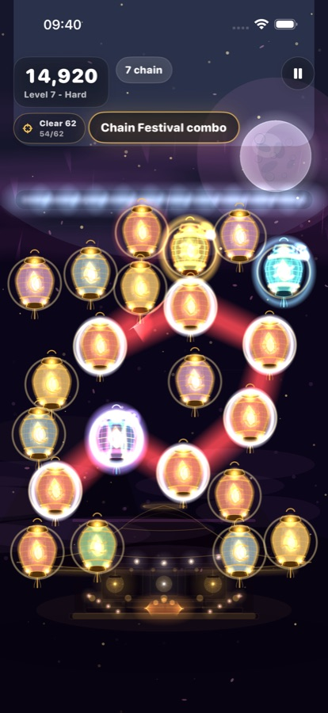
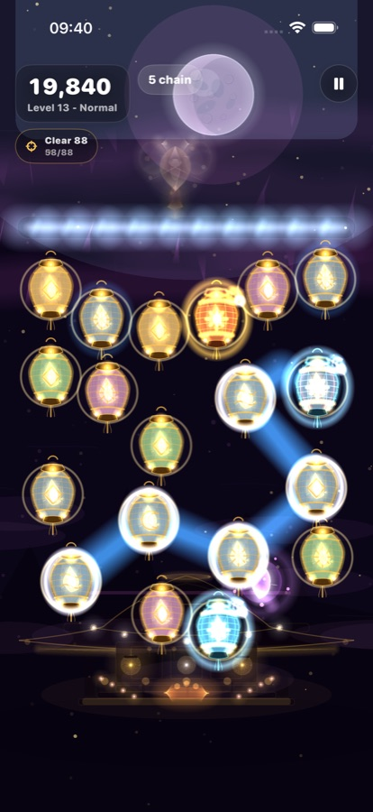
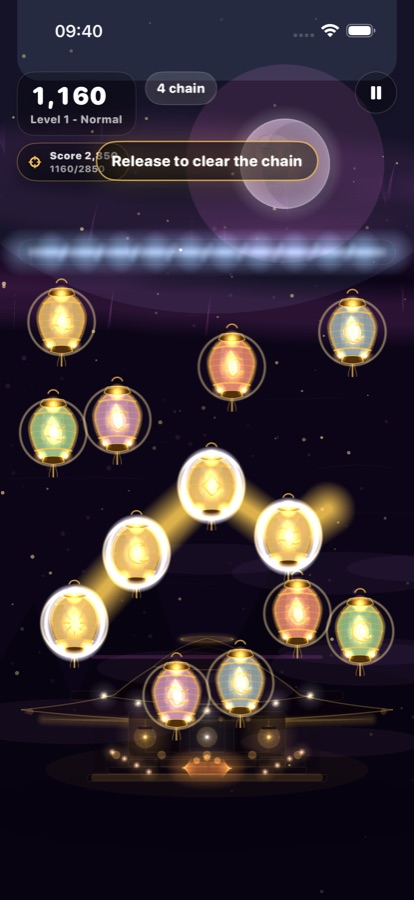
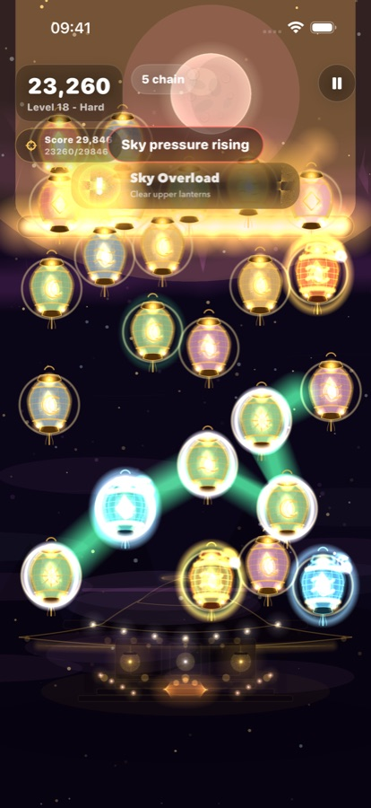
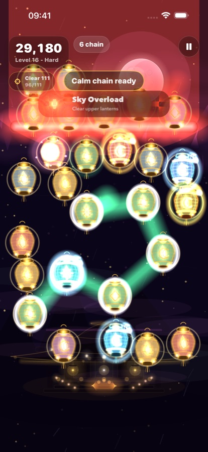
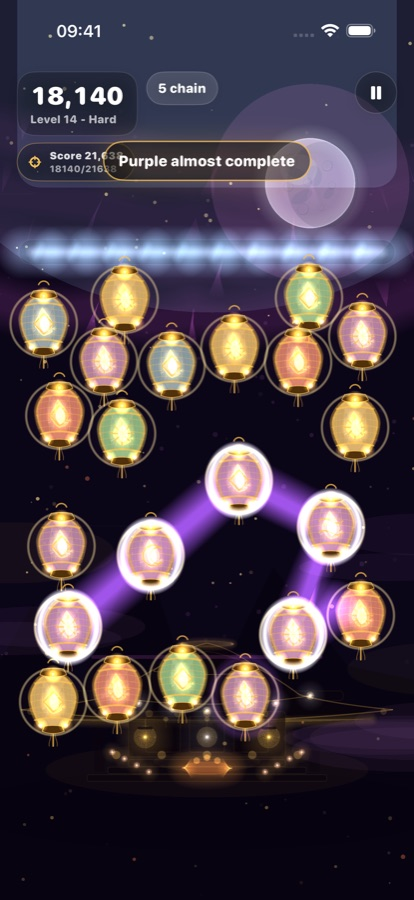
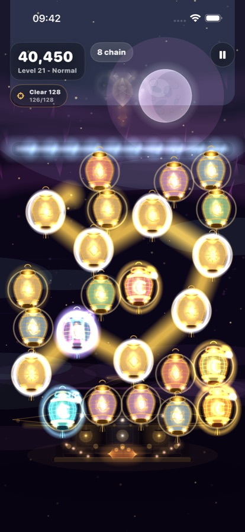

Chain Festival
Build bold paths through crowded boards for high-score runs.
Coming to iPhone and iPad
Chain glowing lanterns, calm sky overloads, discover spirits, and restore forgotten shrines one luminous run at a time.
Fast, readable, magical
Glowfall is built around satisfying path drawing: link matching lanterns, plan around special effects, and choose the right moment to release your chain.


A shrine that fights with you
Progress is visible in the run itself: shrine pieces, spirits, bonus items, and sky pressure all meet inside the same board, so each screenshot looks like a real moment from the game.
Build bold paths through crowded boards for high-score runs.
Use calm lanterns to regain control when the sky gets dangerous.
Discover shrine spirits and collect rare bonuses mid-run.
Pressure builds at the top of the sky until every move matters.
Gameplay screenshots
Moon Garden, Ember chains, mist spirits, prism echoes, and overloaded skies all show Glowfall at its best.





Stay close to the glow